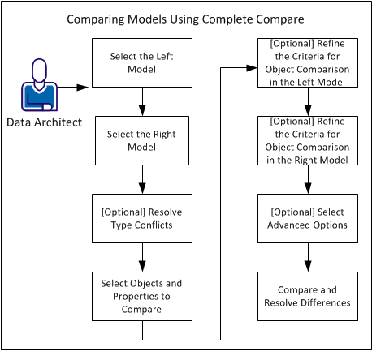

During the life-cycle of a model, you may create several versions of the model. After you create a database from the model, you may make changes to the database, but not implement the changes in the model. This results in the model not being up-to-date with the database. At some point, you may want to compare models or databases to know the differences in the objects and properties. This tutorial describes how Data Architects can compare models or databases to know the differences in the objects and properties.
Use the Complete Compare feature to compare the following items:
When you use the Complete Compare feature, you can compare objects and properties at the model or database level. You can compare the models at either Logical, Physical, or Logical and Physical level. You can compare a Logical Only model with another Logical Only model. However, you can compare a Physical Only model with either another Physical Only model or a Logical/Physical model.
After you finish comparing, you can view and resolve differences. When you begin to resolve differences, models that are currently open are changed in real time. You can undo, redo, or reverse compare actions. If you have included a database or script file in the compare, you can generate ALTER scripts for the models.
You can select the class of objects you want to compare, for example, tables, columns, keys, and relationships. You can also compare all objects or only a few selected objects. Comparing selected objects helps you view differences at specific object levels. For example, you can view differences only for selected tables, columns, keys, or relationships.
This section describes how you can compare two data models. Apply the same principles to compare any other set of items.
The following diagram illustrates the procedure to compare two data models:

Use the following steps: